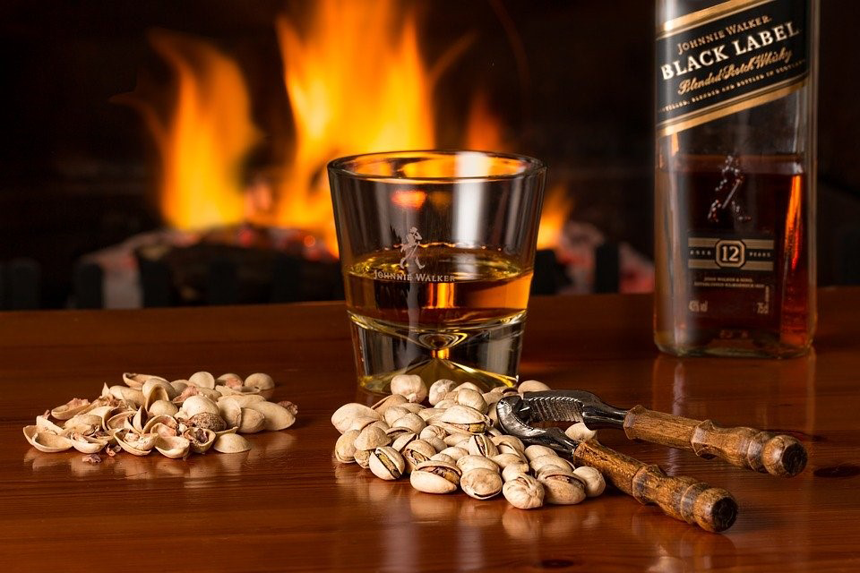
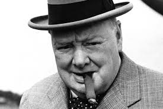

JOHNNIE WALKER 12 YO „BLACK LABEL” – ULUBIONA WHISKY CHURCHILLA
Przejdź do notki smakowej >>Johnnie Walker Black Label to najsławniejszy blend premium na świecie. O whisky tej mówi się, że składa się z około 40 rodzajów whisky, z których najważniejsza to 12 yo Cardhu ze Speyside. Ziemistość i lekką dymność do JWBL wnoszą (podobno) Caol Ila i Talisker.

Johnnie Wlaker Black Label to ulbuiona whisky Winstona Churchilla, który podobno zaczął ją pić z wodą podczas jednej z podróży do Afryki, aby chronić przewód pokarmowy przed bakteriami. Widocznie ochrona ta była bardzo skuteczna ponieważ Churchill stosował ją już do końca życia 😉
„Jedna z moich podstawowych zasad to picie przed, w trakcie i po posiłku”
Do historii przeszły także słowa Churchilla skierowane do Bessi Braddock, która zarzuciła mu pijaństwo:
„Jestem pijany – to prawda, ale kiedy rano będę trzeźwy, pani ciągle będzie brzydka”.
Elegancko ubrany facet, z kubańskim cygarem w jednej dłoni i szklanką whisky w drugiej. Chyba powinienem powiesić jego plakat nad łóżkiem. 
Kolor: Miedziana
Nos: Niezbyt lotna, delikatna, kremowa, skórzasta, tytoniowa, nie wyczuwam intensywnego zapachu, ale zapach, który wyczuwam bez wątpienia jest bardzo przyjemny.
Smak: Oleista i słodka, lekko dymnna.
Finisz: delikatny finisz, karmelowy z dozą gorzkiej czekolady i minimalną dymnością na końcu. Trochę pieprzny, ale zupełnie pod kontrolą. Doskonale nadaje się do popijania.
Ocena:79/100
Nos: Niezbyt lotna, delikatna, kremowa, skórzasta, tytoniowa, nie wyczuwam intensywnego zapachu, ale zapach, który wyczuwam bez wątpienia jest bardzo przyjemny.
Smak: Oleista i słodka, lekko dymnna.
Finisz: delikatny finisz, karmelowy z dozą gorzkiej czekolady i minimalną dymnością na końcu. Trochę pieprzny, ale zupełnie pod kontrolą. Doskonale nadaje się do popijania.
Ocena:79/100